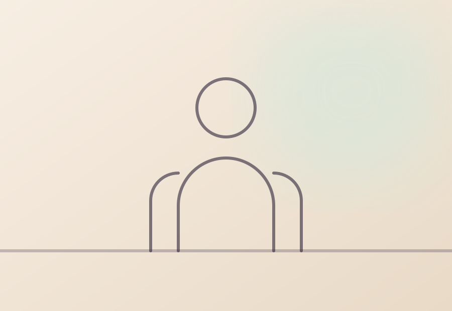
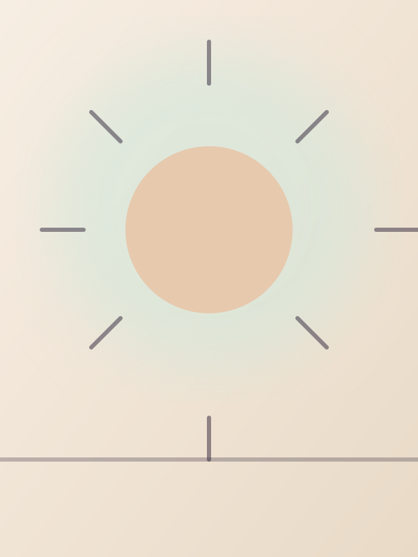
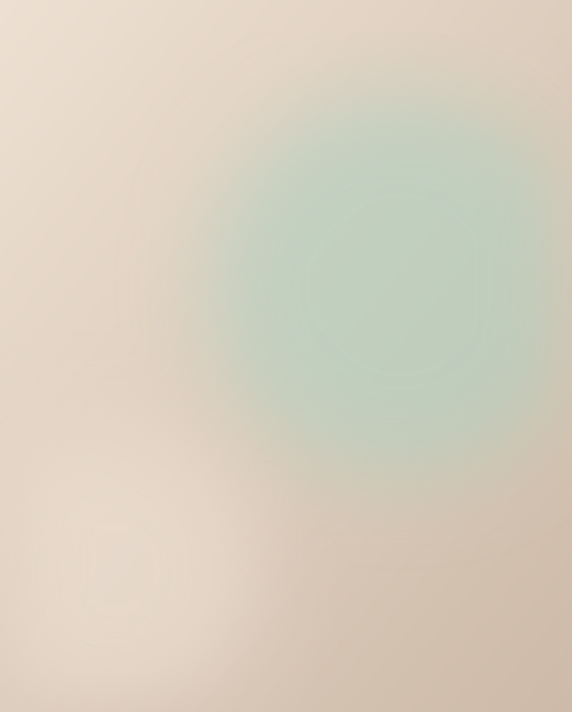
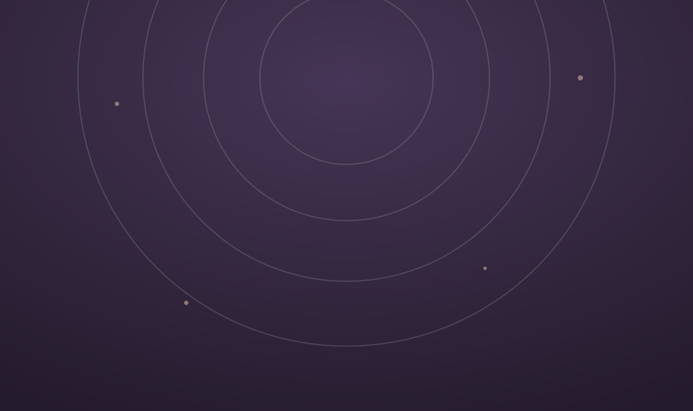

Індивідуальна терапія
50 хвилин наодинці зі своїм запитом. Регулярність — зазвичай раз на тиждень.
Онлайн та очні сесії
Психологиня Тетяна Коваленко. Тривога, вигорання, стосунки та самооцінка — у темпі, який підходить саме вам.

А хороша новина?
Не за один день, а крок за кроком
У терапії ви не просто «перечікуєте» складний період — ви набуваєте навичок, які лишаються з вами назавжди. Нижче — як влаштована робота і з чим я допомагаю.
Спеціалізована підтримка для конкретних запитів

Психологиня — Тетяна Коваленко
Моя мета — не втримати вас у терапії назавжди, а допомогти віднайти опору й іти далі самостійно.
Я працюю з дорослими, які втомилися тягнути все на собі. В основі — доказові методи, підібрані під ваш запит, а не універсальна схема «для всіх».
Очно чи онлайн, індивідуально чи в парі — ми починаємо з того місця, де ви зараз, без оцінок і без поспіху.
Практикую від 2018 року. Освіта — клінічна психологія, перепідготовка з когнітивно-поведінкової терапії. Регулярна супервізія та особиста терапія.
У кабінеті немає «правильних» почуттів. Усе, що ви приносите, — доречне. Конфіденційність повна: сказане лишається між нами.
КПТ і схема-терапія як основа, елементи роботи з тілом і практики усвідомленості. Між сесіями — невеликі вправи, якщо ви цього захочете.

Оберіть те, що зручно саме вам

50 хвилин наодинці зі своїм запитом. Регулярність — зазвичай раз на тиждень.
Про конфлікти, близькість і вміння чути одне одного. 80 хвилин разом.
Коли гострої кризи немає, але хочеться стійкості та ясності. Раз на 2–4 тижні.
Як виглядає шлях від першого листа до змін
Ви пишете кілька речень про те, що відбувається. Я відповідаю впродовж дня і пропоную час.
Перша зустріч — 50 хвилин. Дивимось, чи комфортно вам зі мною, і формулюємо ціль.
Регулярні сесії та невеликі практики між ними. Поступово з'являються перші зрушення.
Зустрічі стають рідшими: лишаються навички, якими ви користуєтесь самостійно.
Тут з'являться реальні історії клієнтів — з їхнього дозволу та без імен.
Почати свою історіюОпубліковано з дозволу, імена змінено
Прийшла з безсонням і постійним напруженням. За кілька місяців уперше за роки почала спати спокійно.
Довго відкладав терапію, думав — впораюся сам. Виявилось, річ не в силі волі. Стало значно легше говорити з близькими.
Дуже дбайлива спеціалістка. Ні тиску, ні готових порад — але після кожної зустрічі з'являється ясність.
Найпростіше — прийти на першу зустріч. За 50 хвилин стає зрозуміло, чи комфортно вам у контакті й чи збігається бачення роботи.
Індивідуальна — 50 хвилин, парна — 80 хвилин.
Вартість уточнюйте у листі або в Telegram — вона залежить від формату та регулярності. Оплата після сесії.
Так, працюю онлайн із будь-якої точки світу. Потрібні лише тихе місце і стабільний інтернет — результат не відрізняється від очного формату.
Це нормально і важливо сказати вголос. Я допоможу підібрати колегу: контакт зі спеціалістом впливає на результат сильніше за метод.
Перший крок
Напишіть кілька слів про те, що відбувається. Відповім упродовж дня і запропоную зручний час.
Стежте за мною
Розбори, вправи та короткі нотатки про психіку — щотижня. Той самий допис виходить і тут, і в соцмережах.
Instagram · Reels
Чому щоденник допомагає впоратися з тривогою
5 жовтня 2026
П'ять способів говорити з партнером про важке
28 вересня 2026
Втома чи вигорання: як відрізнити